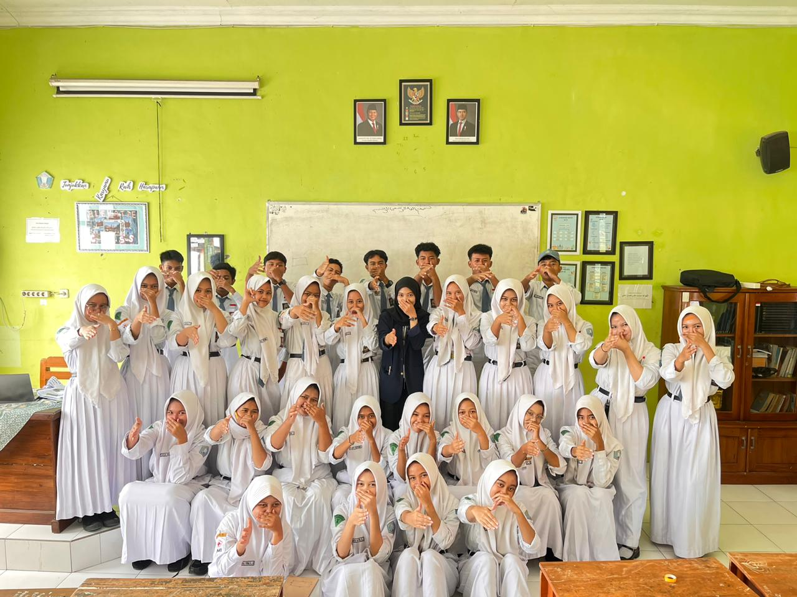
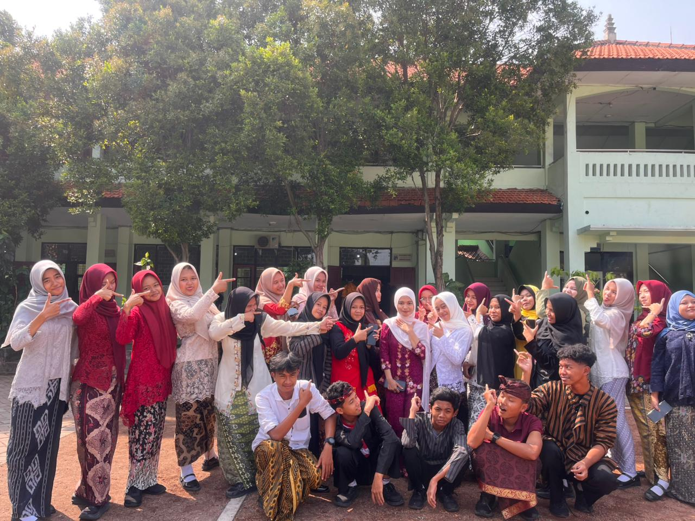
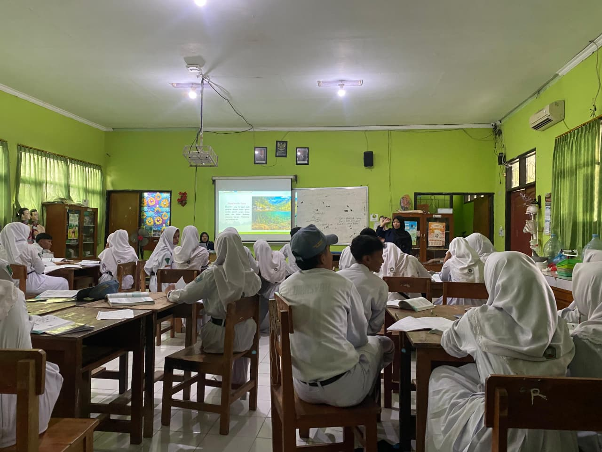
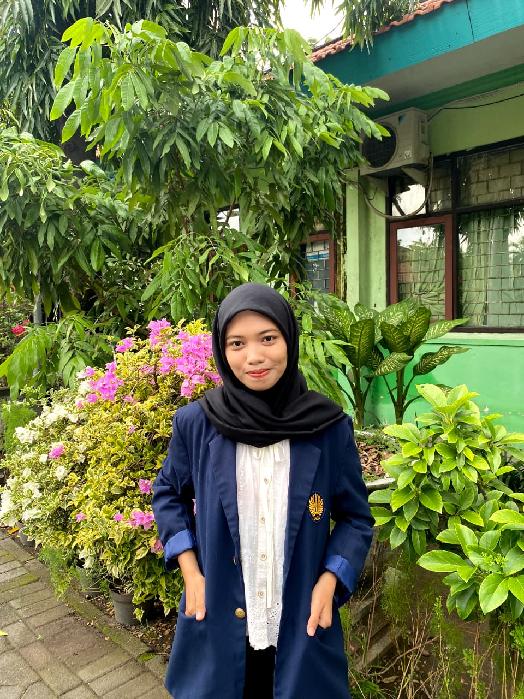
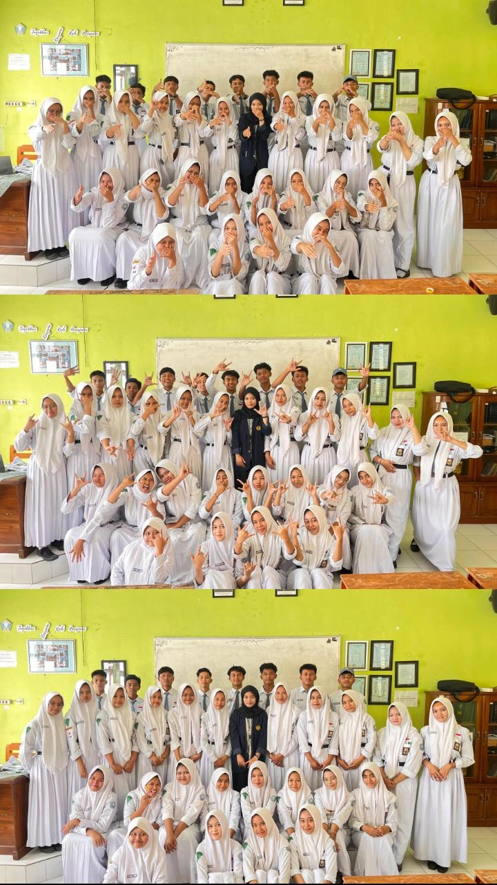
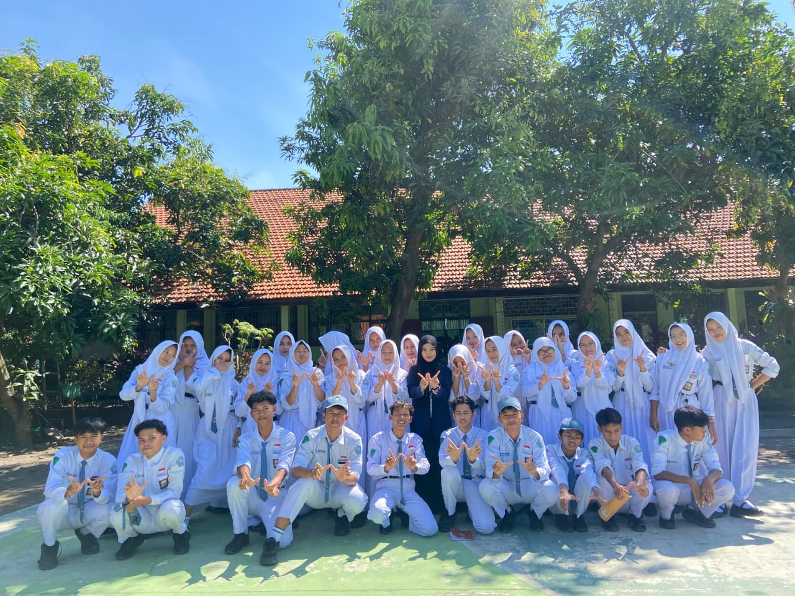
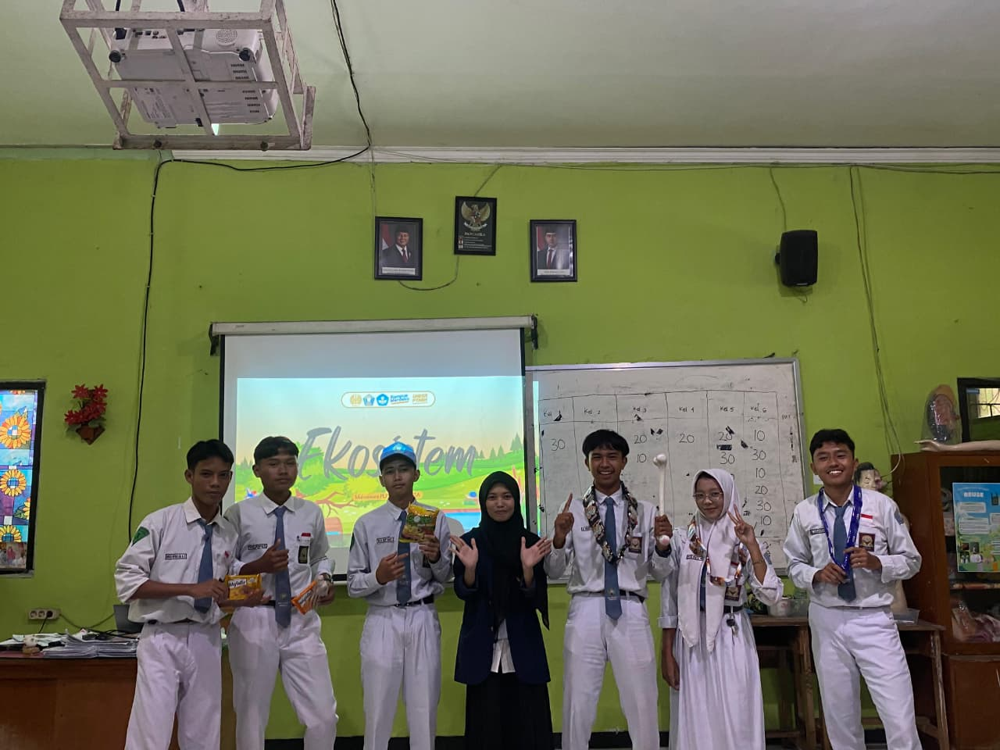
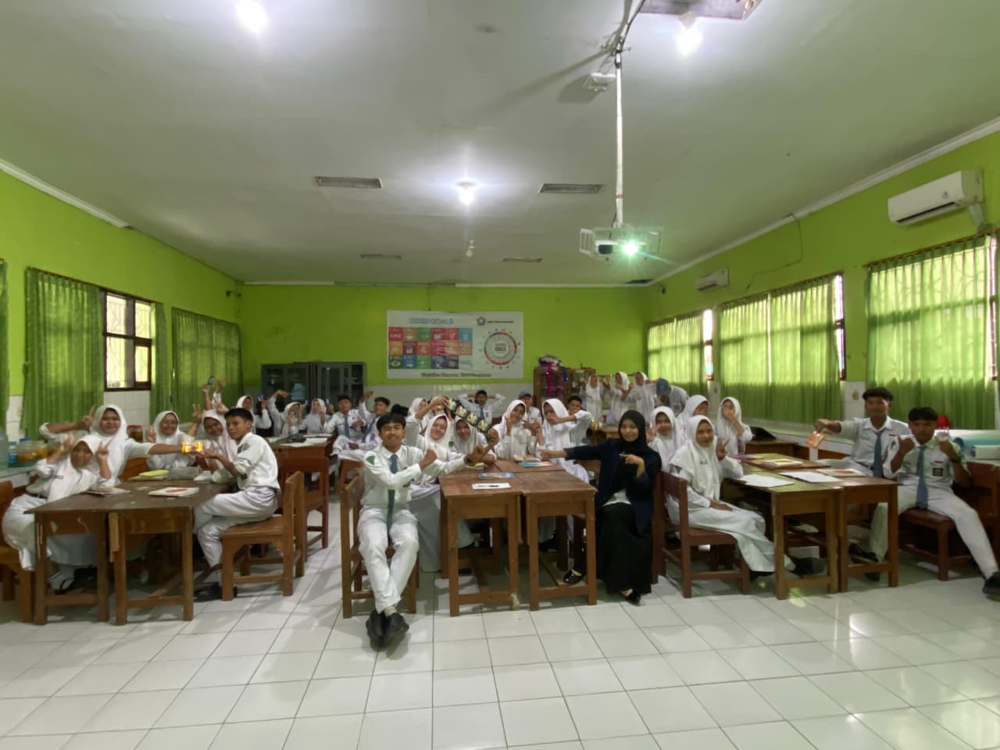

Flashback
Hello
X-3
Let’s take a little flashback to last February — sebuah ruang kecil untuk mengenang tawa, kelas, tugas, doa, dan perjalanan yang pernah kita lalui bersama.

A little archive of
Memories



Pertemuan pertama
Salam kenal dari Mei
Cerita di kelas
Terima kasih atas antusiasnya
Terimakasih atas segala antusiasnya saat pembelajaran biologi berlangsung. Tawa riang kalian semua menambah rasa aman dan nyamanku ketika menjalani studi di semester 6 ini.
Aku pribadi sebenarnya nggak tega kalau memberi tugas yang terlalu banyak, namun apa boleh buat, ini tuntutan dari guru pamong dan sekolah.
Itu sebenarnya aku nggak tega gituin kalian. Pasti kalian ngira aku kejam saat UH Animalia itu ya? 😭 Padahal aslinya lucu :v
Quotes of the day
Satu hal yang harus kalian tahu
eaea quotes of the day.
Permintaan maaf & doa
Semoga ilmu ini bermanfaat
Maaf jika selama mengajar kalian banyak kurangnya, bila sempat nada bicaraku tinggi, omonganku nggak enak didengar, dan kalau ada perbuatanku yang tidak patut dicontoh.
Seluruh doa baik kalian di kertas kesan-pesan sudah aku baca satu persatu. Jujur aku sampai nangis terharu. Semoga semua doa baik kembali ke pengirimnya ya.
Anak-anakku, adik-adikku, teman-temanku semua, semoga kalian senantiasa beruntung dunia akhirat, selalu dalam lindungan Allah, kaya jiwa dan raganya, terpuji akhlak dan agamanya, menebarkan kebaikan dan manfaat, sukses sesuai impian dan cita-citanya, serta menjadi yang terbaik sesuai versi masing-masing.

Untuk X-3
Kalian semua hebat
Meskipun di kelas XI nanti kelasnya akan diacak lagi, semoga kebersamaan kalian tetap masih bisa terjalin yaa. Semoga kalian juga tetap suka biologi, dan suka setiap mapel sesuai passion kalian.
Tetap bertumbuh
Belajar sesuai passion, pelan-pelan, tapi tetap bergerak maju.
Tetap terhubung
Walau nanti kelas diacak, semoga kebersamaan kalian tetap hidup.
Jangan sungkan
Jika ingin berdiskusi atau membutuhkan bantuan, tetap boleh menghubungi.
Penutup
Mau diulang beribu kalipun
Sekarang aku tidak lagi menangis setiap pulang PLP karena capek, tapi justru selalu rindu dengan SMANIWA, terutama kalian yang telah menemani prosesku untuk menggapai cita-cita menjadi seorang guru.
Salam sayang,
Mei Kurniasari
Dokumentasi
Potongan kenangan yang tetap hidup
Galeri ini bisa discroll di dalam slide dokumentasi jika tampilannya lebih panjang dari layar, terutama di mobile.


